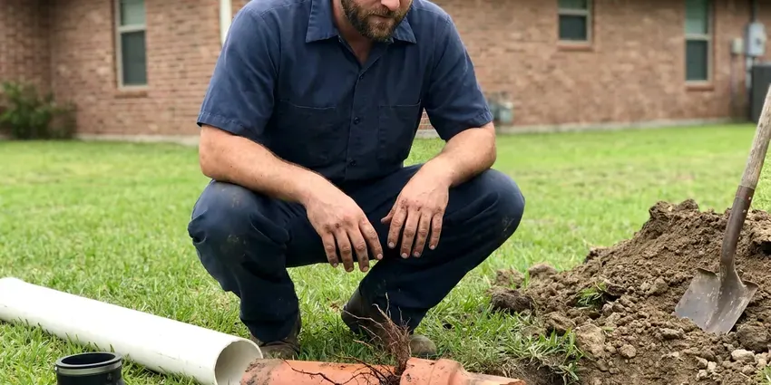

Gas Leak Repair in East Providence, RI
Smell gas in your East Providence, RI home? Get outside, call the utility, then call JPN Plumbing. We locate the leak with a gauge and a sniffer and repair it the same day in most cases.
- Natural Gas and Propane
- Licensed Gas Plumbers
- Written Pricing
- Yard Line Repairs

Locked Meter or Red Tag in East Providence, RI? We Can Help.
We carry the parts for most gas repairs on the truck. Call (401) 364-2507.
Gas Leaks Found and Fixed in East Providence, RI
JPN Plumbing works gas leaks in older houses with black iron and steel yard lines and in newer ones plumbed with CSST. Each material fails differently. Threads go on black iron, fittings or lightning damage go on CSST, and rust takes the buried steel. That pattern narrows the search, so we replace one section and not the whole line.
Some of what we do:
- Meter riser repair and replacement
- Propane piping and connector repair on the house side
- Gauge leak testing of every gas branch

Additional Plumbing Repair Services in East Providence, RI
We offer expert plumbing repair services across East Providence, RI to stop leaks, clear blockages, and keep every fixture working the way it should.


Customers
Why Choose JPN Plumbing for Gas Leak Repair in East Providence, RI?
Picking a plumber for gas work comes down to two things, the license and whether they test both before and after the repair. A lot of people will tighten a joint and call it done. JPN Plumbing sends licensed gas plumbers who carry a gauge and use it on every call. The before and after readings go on your invoice.
- Real Detection, A combustible gas detector and bubble solution find the exact fitting, not guesswork.
- Local Techs, Our plumbers work East Providence every day and know where the old steel lines run, so the search goes faster.
- Safe Work Area, We shut the gas, ventilate and clear ignition sources before any repair starts.
Citywide Coverage
Nights and weekends are when a lot of gas leaks get noticed, usually because the furnace kicks on or someone starts dinner. We answer the phone after hours. Once the utility has made the scene safe, a tech heads your way with the parts for the most common repairs.
Experienced Team
Water heater connectors, dryer flex lines, furnace drip legs and buried runs feeding pool heaters are the bread and butter of our gas work. The crew also handles meter risers and full repipes. Whatever the job, you get a test, a recorded reading and a tag on any valve left off.
Safety-First Approach
CSST that is not bonded gets bonded before we leave, using a 6 AWG copper conductor to the electrical service grounding, as the manufacturers require. This lowers the chance of lightning damage to the tubing. Old installs often skip it. We point out any other bonding gaps we see, like a missing clamp on a newer appliance branch.
Trusted Certified East Providence Plumbing Services Professionals
At JPN Plumbing, we take pride in licensed, certified plumbing services throughout East Providence, RI. Those papers on the wall mean something. Every repair, install and maintenance visit follows strict safety and quality rules, and the plumbers doing the work carry recognized industry credentials.
Call Us Now PHCC Plumbing Contractor Recognition
PHCC Plumbing Contractor Recognition Better Business Bureau (BBB) Accreditation
Better Business Bureau (BBB) Accreditation Angi Certified Pro
Angi Certified Pro ISO 9001 Quality Management Certification
ISO 9001 Quality Management CertificationInsured Gas Leak Repair in East Providence, RI
Appliance Connector Replacement in East Providence
Old uncoated brass connectors, the kind made before the mid-1970s, are the subject of consumer safety warnings because the flare nut can separate from the tube. If your range or water heater still has one, it should come out. We see them weekly. The replacement is a coated stainless connector sized for the appliance, with a new ball valve and a sediment trap where one is required. Bubble testing follows before the pilot is lit.

Residential Gas Leak Detection in East Providence
A gas leak in a house rarely sits where the smell is strongest, because gas drifts along joists and collects in closets and basements. The first step is a pressure gauge on the piping, which tells us whether the system is actually losing gas. Then the sniffer comes out. Our combustible gas detector reads in parts per million, so we can follow the reading fitting by fitting until it peaks. Bubble solution on the suspect joint gives the final confirmation.
Propane Gas Leak Repair in East Providence, RI
Propane behaves differently from natural gas because it is heavier than air, so a leak settles into basements and crawlspaces instead of rising. The first-stage regulator at the tank and the second-stage regulator at the house both get checked. Low spots get sniffed first. If the supplier owns the tank, they handle the tank side and we handle the piping from there to the appliances. Rural properties with underground tanks get a line test too.
Emergency Gas Leak Repair in East Providence, RI
Hissing at the meter, a sulfur smell in the kitchen, a dead patch of lawn or a carbon monoxide alarm all mean the same thing: get everyone outside before you touch anything. Call the utility from outside, not from inside the house. JPN Plumbing runs emergency gas calls in East Providence, RI around the clock. After the utility closes the meter, we cut off the bad branch, fix it and test it. Unaffected appliances usually come back the same day.
Red Tag Gas Repairs in East Providence
A red tag on your meter or appliance means the utility found a leak or unsafe condition and will not restore gas until a licensed contractor fixes it. The tag usually says what they found, so we start there. Then we test everything. Once the repair is done, we perform the required test and send the documentation to the utility or the inspector. Relights are scheduled with the utility, usually within a day.
Gas Leak Detection in East Providence
Some leaks announce themselves with a hiss you can hear across the room, and others lose a few cubic feet a day and only show up on the bill. Slow leaks are what the test gauge is for. We isolate, then sniff. Testing happens with the appliance valves shut and again with them open, since some leaks hide past a valve. Finding the exact joint keeps the repair small.
Gas Leak Repair Cost Comparison in East Providence, RI
Price follows access. Expect $150 to $450 for a connector or fitting repair you can reach, with the leak test included. Interior pipe inside finished walls or attics often lands between $300 and $1,000, and a buried yard line can run $1,000 to $4,000 depending on length, depth and whether we can bore instead of trench. You get a written price after we find the leak and before we start the repair. Permit fees are listed as their own line.

Permitting and Code Compliance in East Providence, RI
Most jurisdictions want a permit for new gas pipe or a moved line, though a straight connector swap often does not need one. We tell you up front which way your job falls. The fee goes on the estimate. The work follows Rhode Island adopted fuel gas code and any local amendments. The signed inspection card goes to you, and a future buyer's inspector will likely ask to see it.
Gas Leak Repair Plumbers Near You in East Providence, RI
Our trucks carry black iron fittings, CSST in two common brands, polyethylene pipe and appliance connectors, which covers most gas repairs in East Providence without a parts run. Special-order parts are rare, and you hear about it on the first visit if one is needed. Commercial regulators are the usual exception. We stock pipe and fittings up to 1-1/4 inch.
Outdoor gas lines produce a surprising share of our calls, because pool heaters and fire pits sit at the end of long buried runs. Fence augers and sprinkler trenching cut more of these lines than rust does. Look for dead grass. That branch gets valved off and tested on its own.
JPN Plumbing at a Glance
- Fully licensed plumbing team covering East Providence, RI
- 24/7 emergency service with same-day scheduling
- Clear written estimates, no hidden fees
- 4.8-star rated by 684+ Rhode Island customers
East Providence Map
East Providence Information
- Population
- 46,900
- Area codes
- 401/508/774
- Service area
- East Providence and towns within a 40 mile drive
- Nearby
- Providence, Pawtucket, Central Falls, Cranston
Basements are standard in most homes, and many rely on sump pumps to manage groundwater during wet seasons. Ground movement strains rigid gas pipe at threads and risers, so East Providence homes with older yard lines see more leaks than most.
Talk to a Plumber
Call JPN Plumbing for honest, reliable plumbing from people who know the trade in East Providence, RI.
Our Specialized Plumbing Services in East Providence, RI
At JPN Plumbing, you get every kind of plumbing service from one company across East Providence, RI. We go from leak detection all the way to full system installations, for homes and commercial buildings, and we do it quickly at a fair price. Take a look at our core services below:


Our Gas Leak Repair Steps in East Providence, RI
No wrench comes out until the leak is confirmed and located.
Call Us
Once you are outside and the utility has been called, phone (401) 364-2507. Dispatch asks where you smell it and whether the meter was shut or tagged.
Make It Safe
The tech confirms the gas is off, opens the space and clears ignition sources before any tools come out.
Find the Leak
A gauge confirms the system is losing pressure, then a combustible gas detector and bubble solution narrow it to one joint.
Frequently Asked Questions About Gas Leak Repair in East Providence
Expect $150 to $400 for a minor fix like remaking a connection, and $500 to $2,500 or more when sections of pipe need replacing. The final price depends on pipe material and access. Testing comes first. The price is set after the leak is located and before the repair begins, and it holds.
Get everyone outside into fresh air and call 911. You cannot smell CO, which is why the alarm matters. Once the house is cleared, we check each appliance and its vent for the source.
No. Gas joints need the right sealant and a pressure test afterward, and most jurisdictions require a licensed plumber or gas fitter to do the work. A DIY fix can loosen next winter. An unlicensed repair can also give your insurer a reason to deny a claim after a gas fire.
The utility found a leak or unsafe condition and shut the gas off at the meter until it is repaired. Service stays off until a licensed repair passes a pressure test.
Not with gas. Gas piping is licensed work in most places, and a bad joint is a fire waiting to happen. Shutting the valve at the appliance or the meter is fine if you can do it safely.
It depends on the scope. Swapping a connector usually does not need one, while new pipe or a replaced riser usually does.
We stand behind our gas work with a written workmanship warranty. If a repair we made leaks during that period, we come back and fix it.
Yes, workmanship on our gas repairs is warrantied, and parts carry the manufacturer's coverage. You get the warranty terms in writing on the invoice.
What People Are Saying About Our Plumbing Experts?

Marcus H.
Grease from the fryer line kept clogging the kitchen drain at my diner. JPN Plumbing hydro jetted the line after closing, showed me the buildup on camera, and set us up on a quarterly cleaning so it does not catch us on a Friday again.
Drain Cleaning · Providence, RI
Jessica T.
We were adding a gas range in a kitchen remodel and needed a new line run from the meter. The plumber pulled the permit, ran the pipe through the crawl space, and had it inspected and approved within the week.
Gas Line Repair · Central Falls, RI
Megan L.
Our upstairs tub drained so slowly that every shower turned into a bath. JPN Plumbing pulled a wad of hair out of the stopper and then snaked the line past the trap. Three months later it still drains fast.
Drain Cleaning · Cranston, RI
Mark T.
The floor drain in our office break room backed up every few weeks. The plumber ran a cable, then put a camera down and found roots at a joint about thirty feet out. Seeing it on the screen made the decision easy.
Drain Cleaning · East Providence, RI
Carlos V.
Our house still had galvanized pipe, and upstairs the shower was a trickle. The crew repiped everything in PEX over three days and patched every drywall hole before they left. The pressure difference is night and day.
Repiping · Pawtucket, RIRobert G.
The camera showed a full break in our clay sewer line near the street. JPN Plumbing replaced it with a trenchless pipe burst, so the only digging was two small pits in the yard. They let us watch the footage before and after.
Sewer Line Replacement · Valley Falls, RI